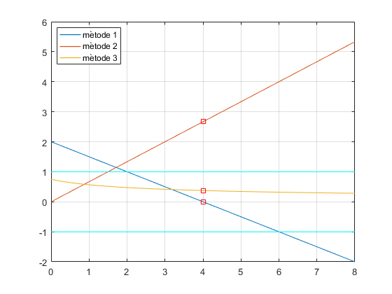

Ex5, Full_lab4.pdf
Contents
Estudi convergència, quin convergeix més ràpidament?
g1 = @(x) (8*x-x.^2)/4;
dg1 = @(x)(8-2*x)/4;
g2 = @(x) (x.^2-4)/3;
dg2 = @(x) 2*x/3;
g3 = @(x) sqrt(3*x+4);
dg3 = @(x) 3./sqrt(3*x+4)/2;
alpha = 4;
t = 0:0.01:8;
y = ones(size(t));
plot(t,dg1(t),t,dg2(t),t,dg3(t), alpha, dg1(alpha),'rs', alpha, dg2(alpha),'rs',alpha, dg3(alpha),'rs',t,y,'c',t,-y,'c','LineWidth',1), grid
legend('mètode 1','mètode 2','mètode 3', 'Location', 'best')

Calculeu 6 iteracions de cada un dels mètodes, escollint x0 adient.
x0 = 3; tol = 0.000005; N = 6;
if (abs(dg1(x0)) < 1)
[ arrel, X ] = new_fixPoint(f,g3,x0,tol,N)
else disp('Mètode divergent')
end
arrel =
3.996985082600374
X =
Columns 1 through 3
3.000000000000000 3.605551275463989 3.849240681795823
Columns 4 through 6
3.943059985010051 3.978590196920280 3.991963250176640
Column 7
3.996985082600374